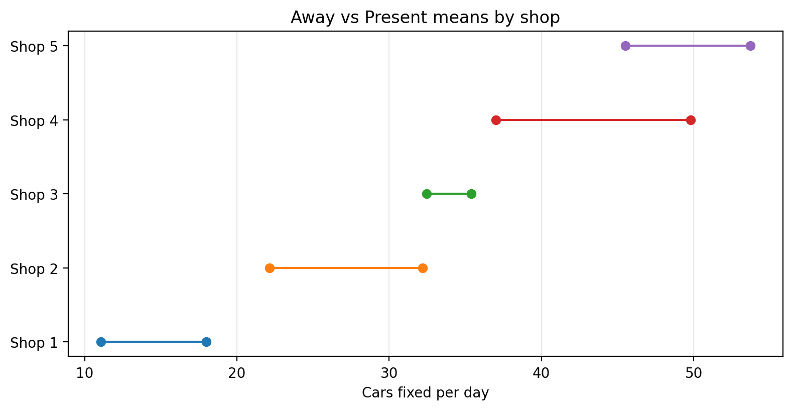
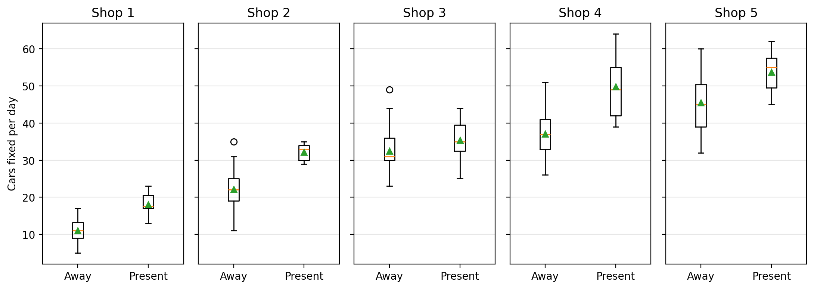
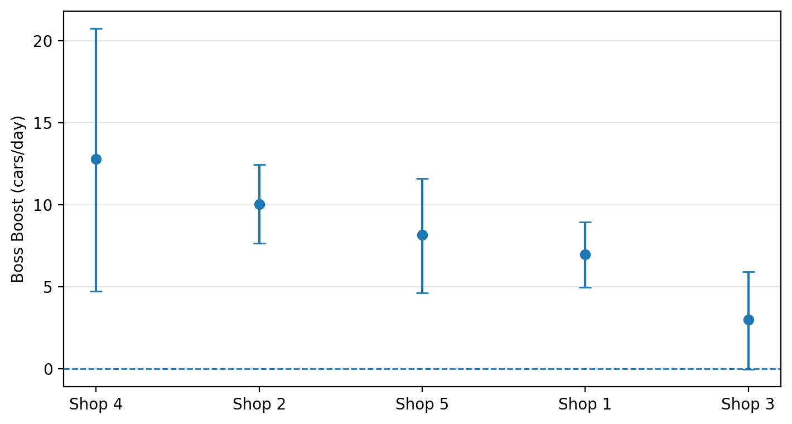
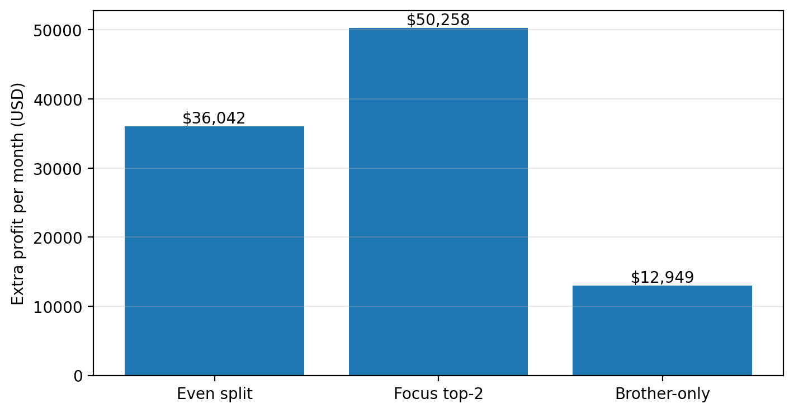

| KPI | Value | |
|---|---|---|
| 0 | Days in dataset | 250.00 |
| 1 | Shops | 5.00 |
| 2 | Overall mean cars/day | 31.04 |
| 3 | Top boss-boost (cars/day) | 12.78 |
| 4 | Second boss-boost (cars/day) | 10.07 |
Patrick’s Auto Shops — Decision Brief
A clean, original style: KPIs → Evidence → Plan
0) What to do (TL;DR)
- Spend the bulk of your week in the two shops where your presence adds the most cars per day.
- Visit the remaining shops only as needed for training, quality checks, and relationships.
- Re-check rankings quarterly and rotate as the data change.
1) KPIs at a glance
2) Evidence (our visuals, our style)
2.1 Dumbbell: mean Away → Present (per shop)

2.2 Boxplots: distribution with & without you

2.3 Ranking table: “Boss Boost” (Present − Away)
| shopID | Mean (Away) | Mean (Present) | Boss boost (Δ cars/day) | |
|---|---|---|---|---|
| 0 | 4 | 37.02 | 49.80 | 12.78 |
| 1 | 2 | 22.13 | 32.20 | 10.07 |
| 2 | 5 | 45.51 | 53.73 | 8.22 |
| 3 | 1 | 11.05 | 18.00 | 6.95 |
| 4 | 3 | 32.46 | 35.40 | 2.94 |
3) How sure are we? (uncertainty)
| shopID | effect_mean | ci_lower | ci_upper | |
|---|---|---|---|---|
| 0 | 1 | 6.96 | 4.95 | 8.97 |
| 1 | 2 | 10.05 | 7.53 | 12.42 |
| 2 | 3 | 2.93 | 0.05 | 5.94 |
| 3 | 4 | 12.93 | 5.00 | 21.05 |
| 4 | 5 | 8.18 | 4.49 | 11.69 |

4) What it means in money (scenario sketch)

5) Your weekly plan (simple & defensible)
- Mon–Wed: Highest-boost shop
- Thu–Fri: Second-highest-boost shop
- Pop-ins as needed to other shops (training / bottlenecks / relationships)
Revisit every quarter: Re-run this brief, update the ranking table, and rotate shops as signals change.
Appendix A — Raw summary by shop & presence
| shopID | bossLabel | n | mean | std | q25 | q75 | |
|---|---|---|---|---|---|---|---|
| 0 | 1 | Away | 40 | 11.05 | 2.93 | 9.0 | 13.25 |
| 1 | 1 | Present | 10 | 18.00 | 3.13 | 17.0 | 20.50 |
| 2 | 2 | Away | 45 | 22.13 | 4.82 | 19.0 | 25.00 |
| 3 | 2 | Present | 5 | 32.20 | 2.59 | 30.0 | 34.00 |
| 4 | 3 | Away | 35 | 32.46 | 5.59 | 30.0 | 36.00 |
| 5 | 3 | Present | 15 | 35.40 | 5.00 | 32.5 | 39.50 |
| 6 | 4 | Away | 45 | 37.02 | 5.61 | 33.0 | 41.00 |
| 7 | 4 | Present | 5 | 49.80 | 10.08 | 42.0 | 55.00 |
| 8 | 5 | Away | 35 | 45.51 | 7.24 | 39.0 | 50.50 |
| 9 | 5 | Present | 15 | 53.73 | 5.31 | 49.5 | 57.50 |